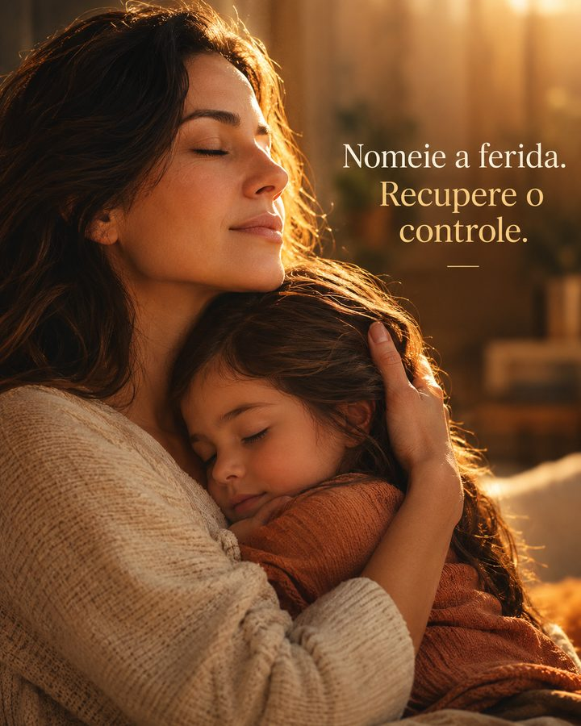

Ao vivo com tira-dúvidas · gravação por 7 dias · garantia de 7 dias · sem dado de saúde coletado

Antes dos 7 anosonde a ferida se forma
5 feridas dominantesuma comanda o seu padrão
Formato
Online e ao vivo, cerca de 2 horas
Prática
Auto-hipnose guiada + repetição 10 min/dia
Material
Gravação 7 dias + Guia das Máscaras
Suporte
E-mail sem prazo · resposta em 24h úteis
O padrão
Você não tem um problema de autoestima. Tem um roteiro antigo rodando sozinho
01
Você jura que dessa vez vai agir diferente e na primeira mensagem fria já está checando o celular de hora em hora. A ansiedade sobe, a história que você conta para si desanda.
02
No trabalho você engole o não que precisava dizer e passa a noite repassando a conversa na cabeça, com culpa física no peito.
03
No domingo com a casa cheia sente um vazio que não combina com a vida que construiu. E se pergunta em silêncio o que há de errado com você.
04
A causa não é falta de força. Antes dos 7 anos cada criança monta uma máscara para sobreviver. Essa máscara vira piloto automático no adulto. Você reage com 35 anos usando defesa de 6.
05
O inimigo é o conselho raso: pense positivo, esqueça o passado, apenas se ame mais. Nada disso nomeia qual das 5 feridas comanda seu padrão. Sem nome, sem endereço, o ciclo repete.
O ciclo do piloto automático
Feridaformada antes dos 7 anos
Máscaraa defesa para sobreviver
Piloto automáticoreage no lugar de você
Defesa de 6usada com 35 anos
Sem nome, sem endereço, o ciclo repete — é por isso que nomear a ferida é o primeiro passo
RejeiçãoAbandonoHumilhaçãoTraiçãoInjustiça
Se você leu até aqui e pensou “é exatamente assim”, o próximo passo é dar nome à ferida. →
Nomear muda o jogo
Elas nomearam a ferida e o padrão quebrou em semanas
Relatos ilustrativos do perfil atendido. Serão substituídos por depoimentos reais autorizados.
Mariana R., 34 anos · ferida de abandono
Checava o celular do parceiro toda madrugada e brigava por qualquer demora na resposta.
Em 21 dias após identificar a ferida, cortou as checagens e voltou a dormir a noite inteira.
Camila S., 39 anos · ferida de humilhação
Dizia sim para todo pedido no trabalho e chorava no banheiro depois, sem contar para ninguém.
Em 30 dias, deu 3 nãos difíceis sem culpa e foi elogiada na avaliação.
Patrícia L., 31 anos · ferida de traição
Terminava todo namoro em 3 meses por ciúme e controle de rede social.
Em 45 dias, manteve o relacionamento sem uma crise de perseguição.
Estes relatos são ilustrativos e serão substituídos por depoimentos reais autorizados — nada aqui é depoimento verificado.
Descubra Sua Ferida Dominante · Protocolo Mapa da Ferida Dominante
Não tenta apagar o passado. Localiza qual das 5 feridas comanda hoje, mostra a máscara que você veste e conduz uma resposta nova por visualização guiada.
1
Nome da ferida
Rejeição, abandono, humilhação, traição ou injustiça. Teste guiado ao vivo.
2
Leitura da máscara
A defesa que você veste para não sentir a dor, e a frase típica no adulto.
3
Impacto no adulto
Como a ferida decide reação, escolha e relacionamento hoje.
4
Acolhimento guiado
Auto-hipnose de acolhimento da criança interior, praticada na hora.
Crença comum
“Preciso esquecer o passado e pensar positivo.” Sem mapa, você trata sintoma solto com autoestima genérica.
Realidade do protocolo
Com o mapa, você trata causa com endereço: ferida nomeada, máscara reconhecida, prática repetida por 7 dias com gravação.
Perfil
Feito para você se…
Feito para você se…
Repete o mesmo padrão em relacionamentos e já percebe a origem na infância
Sente carência, ciúme, dificuldade de dizer não e culpa após explodir
Já faz terapia ou consome autoconhecimento e quer objetividade
Topa participar ao vivo e praticar 10 minutos por dia durante 7 dias
Passe longe se…
Quer apagar o passado em uma noite sem olhar para a própria história
Busca diagnóstico ou tratamento de transtorno grave sem acompanhamento profissional
Não pode estar presente nem ouvir a gravação com atenção na semana
Espera mágica sem praticar o acolhimento guiado
Dentro do encontro
O que você recebe
Encontro Mapa das 5 Feridas
Ao vivo, explicação direta + leitura das máscaras.
Vale R$ 97 na versão avulsa
Teste guiado da Ferida Dominante
Aplicação ao vivo para localizar sua ferida.
Vale R$ 47 na versão avulsa
Sessão auto-hipnose Acolhimento
Prática conduzida na hora, corpo registra.
Vale R$ 67 na versão avulsa
Além do ao vivo
3 bônus para fixar o resultado
Bônus 1
Gravação Espelho de 7 Dias
Aula completa gravada para repetir a auto-hipnose todos os dias na primeira semana.
Valor: R$ 47
Bônus 2
Cupom Continuidade Profunda
Desconto para sessão individual com a equipe, válido 30 dias após a aula.
Valor: R$ 80
Bônus 3
Guia Mapa Rápido das Máscaras
Resumo em 1 página: 5 feridas, máscara e frase típica. Consulta em 2 minutos.
Valor: R$ 27
Hoje: de R$ 97 por R$ 19,90
Encontro Mapa das 5 FeridasR$ 97
Teste guiado da Ferida DominanteR$ 47
Sessão de auto-hipnose guiadaR$ 67
Bônus Gravação Espelho de 7 DiasR$ 47
Bônus Cupom Continuidade ProfundaR$ 80
Bônus Guia Mapa Rápido das MáscarasR$ 27
Valor total dos componentes: R$ 365 → R$ 19,90Preço promocional para alcançar o maior número de pessoas e filtrar comprometidas.
Sergio Lima Jr. · hipnoterapeuta há 5+ anos, foco em regressivas
Conduz encontros ao vivo sobre feridas emocionais, cria conteúdo no @sergiolima.jr e mantém atendimentos presenciais com foco em criança interior. O protocolo nasceu no consultório, ao ver que a maioria travava no mesmo ponto: sabia que era da infância, mas não sabia qual ferida comandava.
Encontros ao vivo@sergiolima.jrCriança interior
Antes de entrar
Perguntas reais antes de entrar
Não. O encontro explica as 5 feridas do zero e guia o teste passo a passo. Quem já faz terapia usa o mapa para acelerar.
Sim. O ao vivo tem cerca de 2 horas e a prática diária com a gravação leva 10 minutos por 7 dias.
A condução é leve e guiada por voz, sem perda de controle. Você segue consciente, apenas com foco interno.
Você recebe a gravação de 7 dias e o Guia das Máscaras. O ao vivo dá o tira-dúvidas na hora.
Porque gratuito enche de curioso que não aplica. O valor acessível alcança muita gente e filtra quem está comprometida.
Garantia incondicional de 7 dias. Devolvemos 100% do valor, sem pergunta.
Vídeo informa, não localiza. Aqui você sai com a ferida nomeada, a máscara reconhecida e a sessão praticada no corpo.
Aviso terapêutico e ético. Este encontro é educacional e complementar. Não substitui acompanhamento médico, psicológico ou psiquiátrico, nem orienta decisões sobre medicamentos. Não coletamos dados de saúde nesta página. Se você estiver em sofrimento intenso, procure ajuda imediata: CVV 188 (24h) · SAMU 192.
Última chamada
Nomeie a ferida. Recupere o controle.
De R$ 97 por R$ 19,90 · ao vivo + gravação 7 dias · garantia de 7 dias.